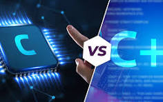
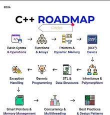
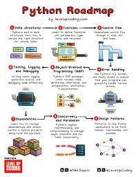
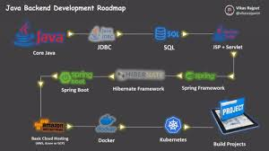

what You know About Artificial Intelligence Engineer ??
An artificial intelligence (AI) engineer is a tech professional who develops, programs, and trains algorithms to function like a human brain.
They use AI and machine learning techniques to create systems and applications that help organizations improve efficiency, cut costs, and make better decisions.
Road Map For AI Engineer
AI Engineer's Job Responsibilities And Description Include:
Design and implement machine learning models and algorithms to solve specific business problems.
Collect, preprocess, and analyze large datasets to train AI models.
Integrate AI solutions into existing systems and applications.
Stay up-to-date with the latest AI research and technologies to improve existing systems.
Work with cross-functional teams, including data scientists, software engineers, and product managers, to define project goals and deliverables.
Evaluate model performance using appropriate metrics and make adjustments as needed.
Artificial Intelligence
C AND CPP LANGUAGE

what You know About c and cpp language ??
C vs C++ is a popular blog topic among developers. C and C++ are programming languages that can be used for developing applications such as game development, GUI applications,
operating system, databases, etc. The C programming language is known as the God of programming languages, whereas C++ is an extended version of C.
They have given so much to the programmers that picking one of them over the other will be difficult!
C++ was also known as “C with Classes,” which is a general-purpose, object-oriented programming language. Bjarne Stroustrup developed this language in 1979.
It is a multi-paradigm programming language as it supports both procedural and object-oriented programming languages.
C++ has the property of the C programming language along with the classes and objects for user-defined data types. C++ is used with graphics applications, operating systems, smartwatches, game development, cloud distributed system, compilers, etc.
Today, C++ has been used by top tech giants companies such as Google, Meta, Amazon, and many more. Now, it is not only an extension of the C programming language, but with a modern update and high performance, it has become a popular and in-demand programming language.
Looking to improve your C++ programming skills? Check out these free C++ courses! Taught by experienced developers,
these courses cover everything from basic syntax to advanced topics like object-oriented programming and memory management.
C is a structural or procedural programming language that was developed by Computer Scientist Dennis Ritchie in 1972 at Bell Laboratories.
C is a basic programming language that can be used to develop an operating system such as Windows, Apple OS X to complex programs like Oracle Database, MySQL, Adobe, Python interpreter, Git, etc.
Being procedural language C does not support Objects or Classes.
C has become popular because of its execution speed, simplicity, and flexibility. It became the base for many other programming languages.
If a user knows C, then it is easy for them to learn all other programming languages. C is a case-sensitive language which means small letters and capital letters are treated differently.
Road Map For Cpp Language

# Differences Between C and C++ ,C and C++ are both widely used programming languages, but they have significant differences:
## Key Differences ##
1. **Programming Paradigm**
- C: Procedural language (focuses on functions/procedures)
- C++: Multi-paradigm (supports procedural, object-oriented, and generic programming)
2. **Object-Oriented Features**
- C: No built-in OOP support
- C++: Supports classes, objects, inheritance, polymorphism, encapsulation
3. **Standard Libraries**
- C: Standard C library (stdio.h, stdlib.h, etc.)
- C++: Includes C libraries plus STL (Standard Template Library) with containers, algorithms, etc.
4. **Function Overloading**
- C: Not supported
- C++: Supports function overloading (multiple functions with same name but different parameters)
5. **Exception Handling**
- C: Uses error codes and errno
- C++: Supports try-catch blocks for exception handling
6. **Memory Management**
- C: Uses malloc(), calloc(), free()
- C++: Uses new and delete operators (though can still use C-style allocation)
7. **Input/Output**
- C: Uses printf(), scanf()
- C++: Uses streams (cout, cin)
8. **Namespace Support**
- C: No namespace support
- C++: Has namespace feature to avoid name collisions
9. **Reference Variables**
- C: Only pointers
- C++: Both pointers and references
10. **Default Arguments**
- C: Not supported
- C++: Functions can have default parameters
11. **Templates**
- C: Not available
- C++: Supports templates for generic programming
12. **Inline Functions**
- C: Only through compiler extensions
- C++: Built-in support for inline functions
13. **Type Safety**
- C: Less strict (e.g., implicit type conversions)
- C++: More type-safe (though not as strict as some newer languages)
14. **Compatibility**
- Most C code can compile in C++ (with some exceptions)
- C++ code generally won't compile in C
- Use C for:
- System programming
- Embedded systems
- Performance-critical applications where OOP isn't needed
- When minimal runtime is required
- Use C++ for:
- Applications that benefit from OOP
- Large-scale software development
- Applications needing STL containers/algorithms
- Game development
- When you want both high-level and low-level control
PYTHON
what You know About python ??
Python is used for server-side web development, software development, mathematics, and system scripting, and is popular for Rapid Application Development
and as a scripting or glue language to tie existing components because of its high-level, built-in data structures, dynamic typing, and dynamic binding.
They use AI and machine learning techniques to create systems and applications that help organizations improve efficiency, cut costs, and make better decisions.
Road Map For Python

The coding roadmap is a series of projects that are designed to help you learn the foundations of programming.
JAVA
what You know About java ??
Java is a high-level, class-based, object-oriented programming language that is designed to have as few
implementation dependencies as possible.
Key Features of Java
Platform Independent: "Write once, run anywhere" (WORA) capability
Object-Oriented: Follows OOP concepts like inheritance, encapsulation, polymorphism
Robust: Strong memory management, exception handling
Secure: Built-in security features ,br>
Multithreaded: Supports concurrent programming
High Performance: Just-In-Time (JIT) compiler improves performance
They learning techniques to create systems and applications that help organizations improve efficiency, cut costs, and make better decisions.
Road Map For java

The coding roadmap is a series of projects that are designed to help you learn the foundations of programming.